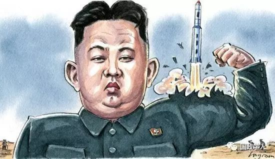
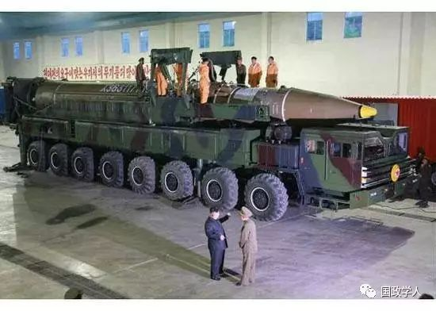
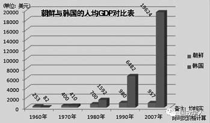

收录于合集


作者简介
张云，日本国立 新潟大学副教授 ，早稻田大学博士研究生。
朝鲜首次宣布洲际导弹试验成功，世界舆论哗然。这发生在中美、中俄、日俄首脑会晤以及二十国集团峰会等国际外交繁忙期的前夜，朝鲜似乎达到了再次占据大国首脑外交日程首要地位的目标。一个2300万人口的封闭国家，能够占据世界上三大经济体、三个核大国的外交主要日程。从某种意义上来说，朝鲜外交的确很成功，而且朝鲜似乎也从不讳言对于自身战略自主的自豪。

朝鲜4日宣布洲际弹道导弹火星-14试验发射成功。图自劳动新闻网
朝鲜问题走到今天，美国政府对朝长期战略的缺失，以及政府换届后的政策不连续，是导致僵局的主要原因。然而，朝鲜在特殊环境中形成的扭曲的世界观及自我误认知（self- misperception），是其外交政策上缺乏创新的重要思想基础。
朝鲜自我误认知的历史起源
朝鲜的政治话语充斥着一种强烈的天不怕地不怕的战略优越感，无论是批评韩国是美国的傀儡，还是对美帝国主义的军事威胁，都毫不在乎。每次核试验或导弹试射后，朝鲜媒体则更会以非常强烈的语言，展示战斗的决心和必胜的信念。很多人都会认为，这仅仅是朝鲜为了掩饰内心虚弱的空城计，但如果我们深挖历史，则会发现朝鲜的这种战略优越感，确是其自我误认知的真实表现。
首先，朝鲜的战略优越感的自我认知幻觉起源于冷战时期特殊的国际结构。东西冷战全球对峙的大格局，让绝大多数国家没有战略自主的机会和空间，但朝鲜的战略环境极为特殊。冷战中朝鲜虽处于共产主义阵营，但在东亚格局中，共产主义阵营的两个大国中国和苏联对峙的次格局（sub- structure），为朝鲜提供了战略自主的可能性。当时，中苏双方都担心朝鲜可能会倒向另一方，造成自身安全形势的恶化，所以中苏都高度重视与朝鲜的关系。这种特殊结构让朝鲜在政治上可以保持自主，在经济上则可以同时获得两国的援助。
我们从历史纪录片可以看出，例如1970年代至1980年代金日成访问中国时，中国给予超乎寻常的礼遇，例如中国领导人邓小平不仅到列车月台，而且是亲自登上金日成专列迎接他。
1987年，邓小平(前在北京会见金日成，两人热烈拥抱。
这种特殊的战略形势及中苏对峙所带来的战略红利的长期延续，让朝鲜逐渐感到自己在经济上自立发达（当时经济好于韩国），在政治上又是可以同大国平起平坐的非同寻常的伟大国家。这种自我认知进一步在国家意识形态上逐渐理论化为“主体思想”。从某种意义上来说，朝鲜的战略优越感和例外主义，是被中苏对峙次格局宠坏的扭曲的自我认知。
第二，中苏关系正常化，冷战结束的战略环境巨变，并没有改变朝鲜领导层自我误认知的惯性。从1980年代末开始，特别是1989年中苏关系正常化以后，中苏实际上已经在战略上开始调整同朝鲜的关系，不再是那么特殊的关系。然而，自我误认知的惯性让朝鲜没能与时俱进地看到自身在冷战中的“成功”，主要因为其幸运地成为了中苏对峙的受益者，而非其本身的特别优秀或能力超群。中苏在1990年代初同韩国建交，韩国经济不断发展已经让朝韩力量对比日益有利于南方，而美日等国与朝鲜没有建立外交关系，这些都造成了朝鲜的合法性危机。

战后至新世纪初，朝韩经济发展情况对比。2007年，韩国人均GDP已达朝鲜20倍。
战略形势的变化，并不是没有影响朝鲜的世界观，但是朝鲜更多地不是调整自我认知，而是认为冷战结束后自己是一个完全的受害者。这种受害者意识和被抛弃感，与冷战时期被惯坏的自身特殊优势意识的鲜明对照，扭曲了朝鲜的世界观：一方面是拒绝承认现实，另一方面又害怕现实。这导致其在外交上的孤立越走越远。
由于冷战中朝鲜的对外关系主要是处理对中苏的关系，或者说如何最大限度地利用中苏矛盾，几乎成了其外交工具箱的全部。除此之外，朝鲜的外交能力并没有太多的储备。
冷战后，朝鲜几乎所有的外交重点都转向同美国的直接谈判上。为了达到这个目的，朝鲜不断使用“边缘政策”，利用开发核武器来获得美国的重视，于是出现了美朝谈判、四方会谈，再到六方会谈与朝鲜半岛紧张局势交替出现的发展。尽管朝鲜也明白，安全威胁不仅没有解决，反而更加复杂，但是朝鲜能够不顾联合国安全理事会决议，并让这些大国们围着自己转，反过来印证了朝鲜的自我误认知，即朝鲜的例外主义和特别伟大。这种在战略上的无畏思想，很大程度上支撑着朝鲜的“边缘政策”。
第三，为什么朝鲜的核武器开发在进入本世纪后速度特别快？这当然与美国政府将其定义为“邪恶轴心国”，以及美韩巨大的经济压力有直接关系。然而，中国的崛起，以及朝鲜认为中俄与美日的战略竞争，可以为其争取战略红利和提供结构性保障的认知有关。过去10多年，朝鲜在战略上的无畏，来源于其认为大国争霸和地缘政治竞争而利用朝鲜来对抗第三方或至少不倒向另一方。在这个大国博弈的过程中，朝鲜自认可以继续获得有利的战略优势，而朝鲜在透支战略红利的过程中，反过来强化了其自我误认知。
朝鲜版的冷战思维与自我误认知的改变
朝鲜问题的解决，不仅美国须要改变冷战思维，不能单靠同盟军事体系和制裁，朝鲜同样须要改变朝鲜版本的冷战思维，不能把希望寄托在利用大国矛盾谋利，以及由此产生的不切实际的战略自大的自我误认知上。大国合作，特别是中美俄日的合作则非常重要，合作的目的不是进一步强化制裁，而是为了改变朝鲜的冷战思维和误认知。
首先，中俄对朝政策需避免给朝鲜造成误认知空间的可能性。由于朝鲜长期以来形成的思维惯性，中俄与美日之间的矛盾会被解读为冷战式的结构对抗。事实上，冷战后大国关系的主流是合作，地缘政治竞争永远存在，但这不可能超越前者，这是大势。因此，中美、美俄、中日在朝鲜问题上展示合作姿态，有助于朝鲜减弱这样的思维，即过去那种依靠大国争霸的地区格局，获得战略优势的机会主义思维是行不通的。朝鲜要转换思维方式，把重点放在如何融入国际社会上。例如，中俄反对萨德导弹系统合情合理，但需要让朝鲜明白，这并不意味着中俄会无原则地支持朝鲜。
第二，中国积极推动在朝鲜问题上的大国合作，有助于让朝鲜明白顽固坚持美朝谈判的想法不对。1994年，当时美朝谈判结果达成框架协定，而两个轻水反应堆则让没有参与谈判的日韩买单，最后证明不成功。朝鲜问题的核心是美朝关系没有错，但是本质是东北亚安全框架没有解决结构性地区问题；没有地区主要国家参与，最终都是行不通的。
1994年10月21日，美朝签署《关于解决朝鲜核问题的框架协议》：朝鲜冻结现有核计划，美国允诺为朝建造两座1000兆瓦轻水反应堆。
美朝双方的确都有理由批评责难对方，美国批评朝鲜没有放弃核武器开发，朝鲜批评美国在双边关系正常化上没有进展，违反协定。但是从美国角度来说，美国已经在朝鲜进行过一次惨痛的战争，不会想要有第二次，特朗普的基本方针是要战略收缩。须帮助朝鲜理解美国民主制对于外交政策的负面影响，例如小布什上台后在言论上推翻克林顿对朝政策，但这很大程度上是为了选举承诺的短期兑现，朝鲜过度评估美国的政策变化，作出过度反应，实际上减少了自身的外交空间。
第三，中国须让朝鲜明白，其看上去的短期“外交成功”，会让其在一个日益经济一体化的地区中日益失败。朝鲜认为，经济领域的好日子已经过去，是美国制裁和安全环境恶劣的结果。朝鲜似乎没有认识到，过去经济上的良好增长是一种假象，是因为同时获得中苏援助，及所谓友好价格的同盟贸易所致。
朝鲜的经济失败主要因为其对于冷战后的国际大势的误判，东北亚不是冷战时代了，经济合作和地区一体化是主流。须让朝鲜理解安全和繁荣不是一个先后的问题，而是必须同时推进的。核武器可能可以带来一时的安全，但是肯定带不来繁荣，冷战时期的经济援助不会再次出现，经济发展必须通过按照市场原则、平等贸易的经济行为获得，而改善不了民生政治稳定，经济发展就不可能持续。
实现朝鲜危机软着陆，是解决朝鲜问题和东北亚安全困境的最佳方式。作为唯一一个能够发挥有效领导力的大国，中国的积极介入除了对美外交外，还在于改变朝鲜长期以来所形成的冷战思维定势和自我误认知。
-END-
来源：狮说新语
筛选：晞哲
编辑：敖遊
声 明
国政学人微信公众平台系非盈利学术平台。建立初衷是方便广大学人进行学术研究，促进学术的传播和交流，不做任何商业用途。如有任何权利问题，请直接与我们联系。
期刊分享 |
国际关系相关专业所有核心期刊免费获取（最新pdf版）